Remembering the
First Presidents
Citizens’ Interpretations of Public Commemoration in Kazakhstan and Uzbekistan
Elmira Bobkova
A public symbol is visible.
Its meaning is not.
Imagine walking past a monument or along a street named after a former president.
The presence of a commemorative symbol does not tell us how citizens interpret it.
Commemoration in public space
Presidential commemoration appears through monuments and names encountered in everyday life.
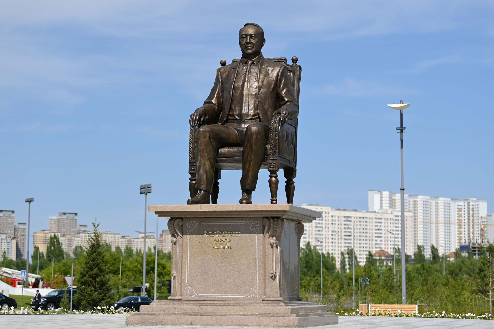
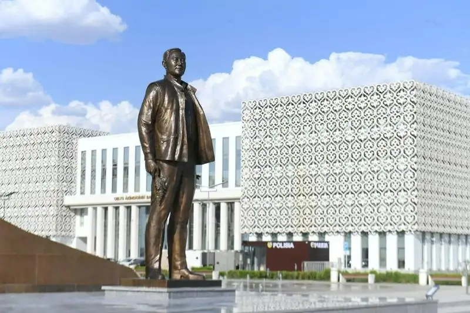
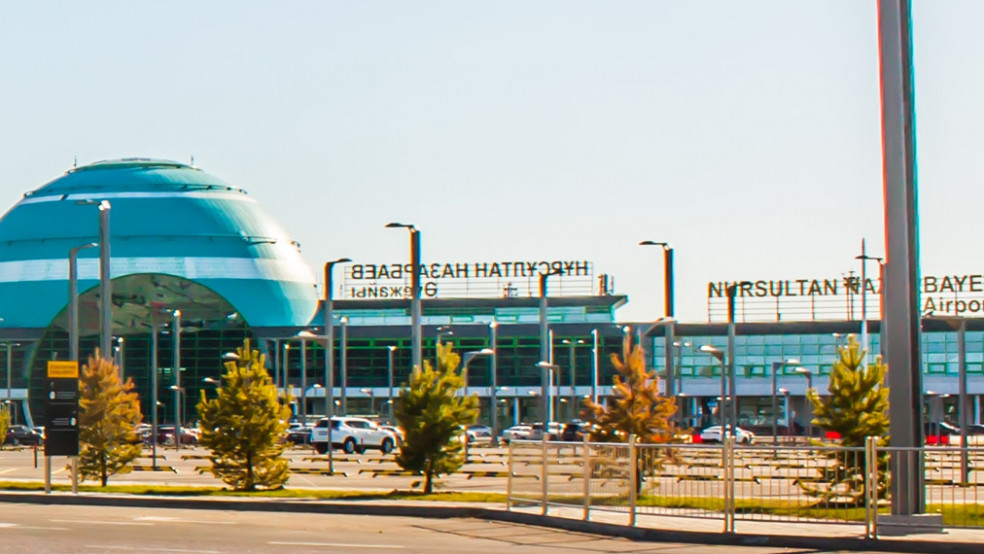
Naming, institutions & change
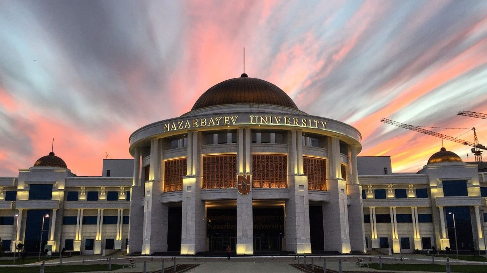
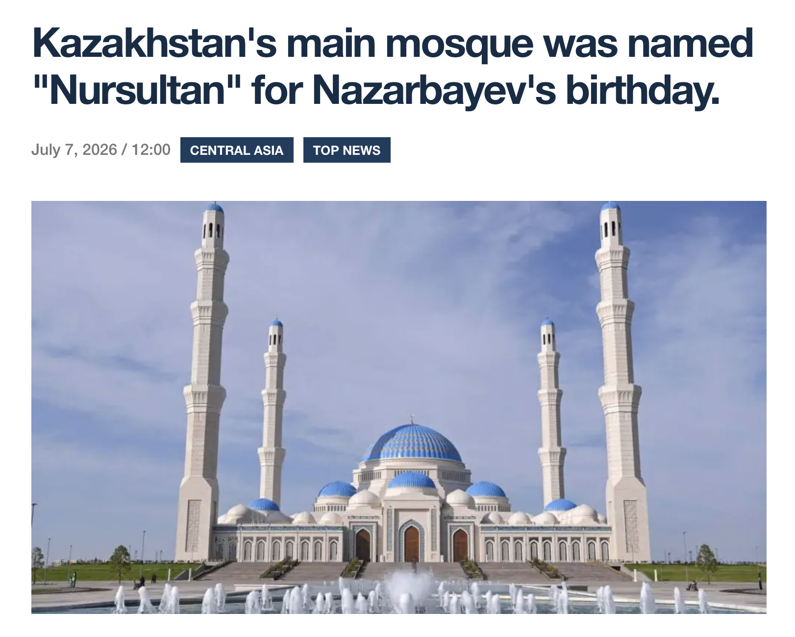
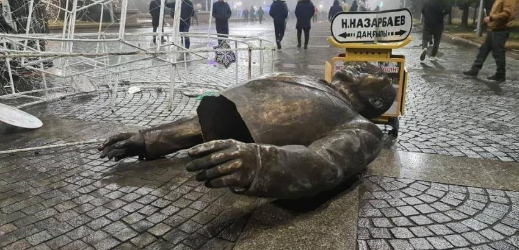
These visuals show different forms of commemoration and change. They do not establish how citizens interpret those practices.
Monuments & memorial sites
Public commemoration of Islam Karimov includes monuments and dedicated memorial spaces.
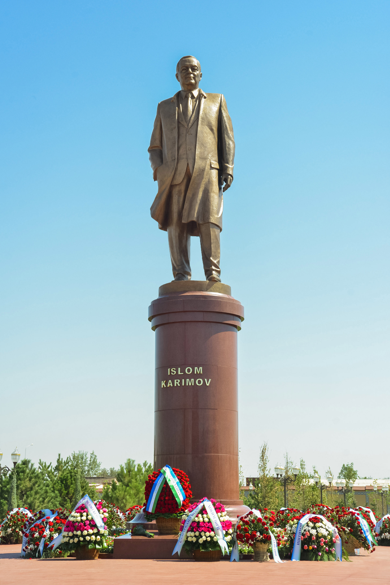
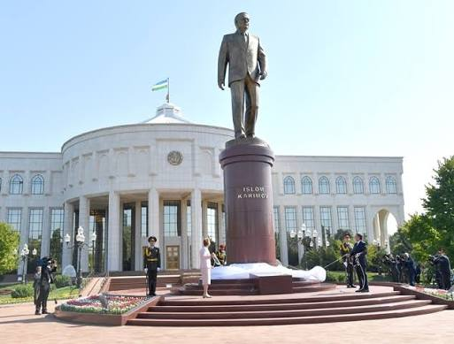
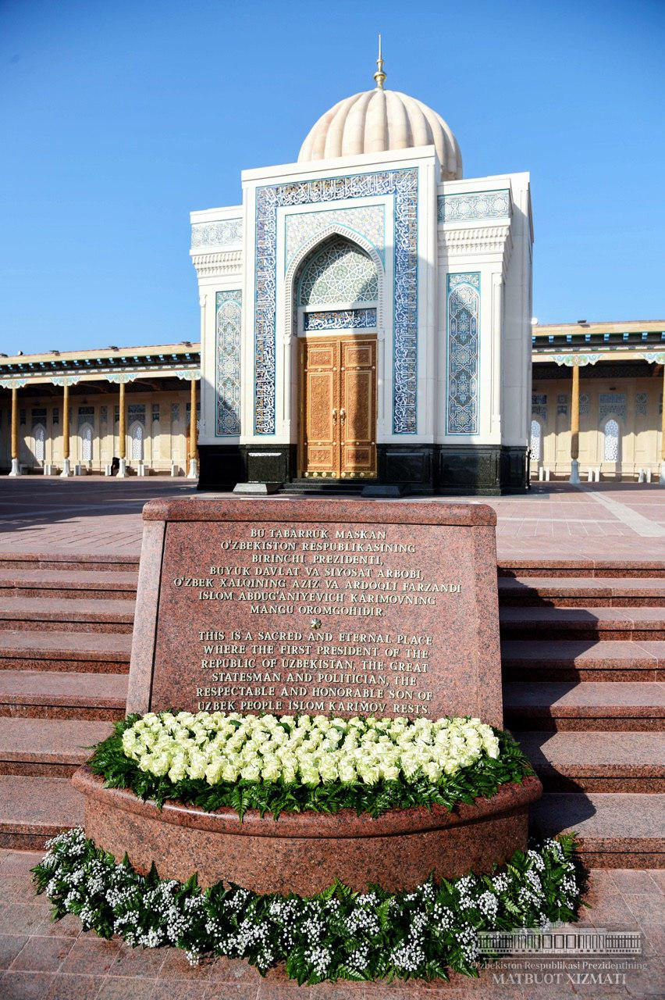
Commemoration through institutional names
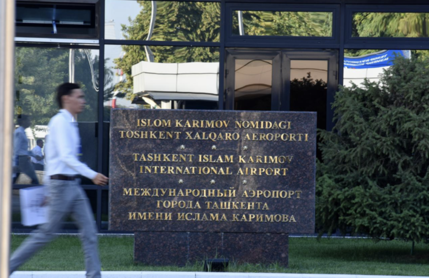
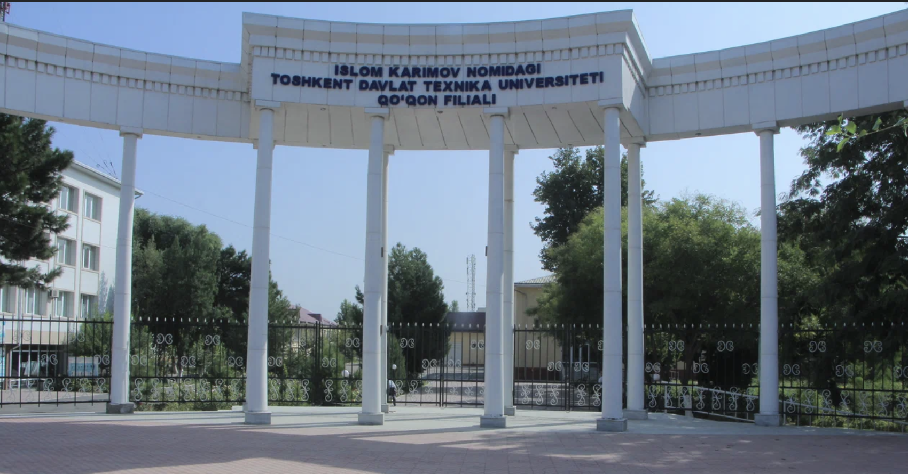
Why Kazakhstan and Uzbekistan?
Kazakhstan
Nazarbayev has been commemorated through monuments, place names and institutions. The capital was renamed Nur-Sultan in 2019 and restored to Astana in 2022.
Uzbekistan
Following Karimov’s death in 2016, Uzbekistan established memorial sites and annual remembrance practices, alongside monuments and named institutions.
Both countries feature presidential commemoration, but their commemorative trajectories differ. This comparison allows me to explore citizens’ interpretations across different political contexts and formative experiences.
Population: citizens of Kazakhstan and Uzbekistan.
Focus: their interpretations of public commemoration
as of 2026.
Why interpretivism?
Meaning rather than measurement
I want to understand how people create and negotiate the meanings of public commemoration, rather than measure support or opposition to former presidents.
Participants’ own perspectives
I do not assume that commemorative practices have one shared meaning. Open-ended interviews allow participants to explain their interpretations through their own experiences.
Three strands of existing research
01 · State construction
Kosyak examines the institutional development of commemoration policy during Karimov’s presidency.
02 · Public memory
Rees studies engagement with WWII commemorative sites in Kazakhstan. O’Shea examines national monuments in Bishkek. Dadabaev compares official narratives with citizens’ recollections of the Soviet past.
Dadabaev (2021)
03 · Formative experiences
Schuman and Scott show the importance of adolescence and early adulthood in collective memories.
What remains less explored?
Existing studies examine how states construct commemoration and how citizens remember historical events or interpret public monuments.
My study explores how citizens accept, reinterpret, contest or attach little significance to commemorative symbols associated with Nazarbayev and Karimov.
From public symbols to personal meanings
Public commemoration
Monuments, names, memorial sites and ceremonies
Citizen encounters
Participants notice, experience or overlook these symbols
Meaning-making
Participants describe their own interpretations
This is an analytical guide to the interview topics, not a predetermined causal sequence.
What I will listen for
Commemorative encounter
How participants encounter monuments, names, memorial sites or ceremonies in everyday life.
Meaning-making
What participants interpret commemorative symbols to mean.
Contestation & negotiation
Acceptance, reinterpretation, disregard or resistance to official commemorative meanings.
Formative political memory
How participants connect their interpretations to earlier political experiences.
These concepts guide my questions. They do not predetermine participants’ answers.
What I expect — and could be wrong about
Participants whose political awareness developed in different periods may interpret the same commemorative practice differently.
Participants may understand commemoration differently depending on whether they perceive its public meaning as changing or being reinforced.
Interpretations may vary across monuments, place names and ceremonies. A lack of interest is also a meaningful finding.
These are open expectations, not hypotheses that predetermine participants’ interpretations.
My position & use of AI
Researcher positionality
As a Kazakhstani political science student, I may be more familiar with Kazakhstan’s commemorative practices than Uzbekistan’s.
Participants may make assumptions about my background or intentions. I will use open-ended questions and reflexive notes to consider how my position shapes the interviews and their interpretation.
AI transparency
AI helped me refine my research question, clarify my interpretivist approach, organize the literature and improve the presentation’s structure and design.
I critically reviewed the suggestions, checked the sources and made the final research decisions myself.
Literature cited
Dadabaev, T. (2021). Manipulating post-Soviet nostalgia: Contrasting political narratives and public recollections in Central Asia. International Journal of Asian Studies, 18(1), 61–81. https://doi.org/10.1017/S1479591420000443
Kosyak, N. A. (2023). Institutionalization of commemoration policy in Uzbekistan in the period of I. A. Karimov’s presidency (1991–2016). Proceedings of the Komi Science Centre of the Ural Division of the Russian Academy of Sciences, (1), 155–161. https://doi.org/10.19110/1994-5655-2023-1-155-161
O’Shea, M. (2023). The nation in bronze and granite: Creating national monuments in post-Soviet Bishkek. Nations and Nationalism. https://doi.org/10.1111/nana.12934
Rees, K. M. (2024). Public commemoration and nationalizing the cult of World War II in Kazakhstan. In Post-Colonial Approaches in Kazakhstan and Beyond (pp. 83–110). Springer. https://doi.org/10.1007/978-981-99-8262-2_4
Schuman, H., & Scott, J. (1989). Generations and collective memories. American Sociological Review, 54(3), 359–381. https://doi.org/10.2307/2095611
Thank you · Questions welcome